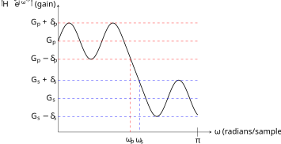
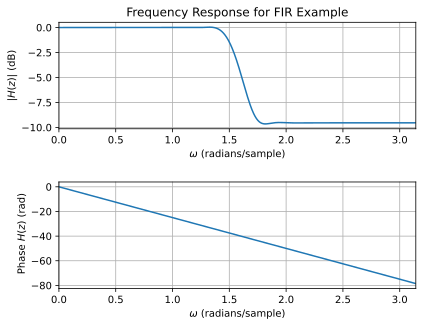
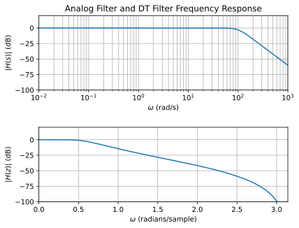

Lecture 22
Filter Design in DT
2026-04-29
Introduction
Today I give an introduction to DT filter design, with a practical rather than theory focus. If you find this content interesting, this material is covered deeper in theory and practice in ECE 4624. We cover only the basic approaches to filter design as a way to illustrate and emphasize the usefulness of the theory. In the next lecture we will see how to implement such filters.
Recall from ECE 2714 that realizable filters must be causal if implemented in real-time. The canonical example is the ideal DT low-pass filter with cutoff frequency \(\omega_c\), which has a frequency response:
\[H(\omega) = \left\{\begin{array}{cc} 1 & 2\pi\, k-\omega_c < \omega < 2\pi\, k+\omega_c\\ 0 & \mbox{else} \end{array} \right. \quad k = 0,1,\cdots\]
The corresponding impulse response is
\[h[n] = \frac{1}{2\pi} \int\limits_{-\omega_c}^{\omega_c} e^{j\omega\, n}\; d\omega = \frac{1}{\pi\, n} \sin(\omega_c\, n)\] which is not causal and thus not realizable in real-time, or exactly off-line since the anti-causal component extends infinitely into the past. We will see shortly that it can be approximated in an off-line setting.
As in CT realizable filters must meet the Paley-Wiener conditions
the frequency response, \(H\left(e^{j\omega}\right)\), can be zero at only a finite number of frequencies;
the frequency response, \(H\left(e^{j\omega}\right)\), cannot be zero over any finite interval of frequencies;
the transition between bands cannot have zero width;
cannot choose the magnitude and phase of the frequency response independently.
Although offline, non-causal filters can be implemented in DT, here we consider causal filters and restrict our designs to those described by a stable LCCDE:
\[y[n] = -\sum\limits_{k=1}^{N} a_k\, y[n-k] + \sum\limits_{k=0}^{M} b_k\, x[n-k]\] which has a transfer function: \[H(z) = \frac{\sum\limits_{k=0}^{M} b_k\, z^{-k}}{1 + \sum\limits_{k=1}^{N} a_k\, z^{-k}}\] and, if stable, has a frequency response. Letting \(z=e^{j\omega}\): \[H\left(e^{j\omega}\right) = \frac{\sum\limits_{k=0}^{M} b_k\, e^{-jk\omega}}{1 + \sum\limits_{k=1}^{N} a_k\, e^{-jk\omega}}\]
The two major class of DT filters are finite-length impulse response (FIR) filters and infinite-length impulse response (IIR) filters. Recall a finite-length signal is one which has a finite number of non-zero values in a finite range of samples.
FIR filters have all \(a_k = 0\). Their attraction is that they can have linear phase and are always stable. They can have efficient implementations and have a finite startup time. However, generally they require a higher order to get the same performance as an IIR filter.
IIR filters cannot have (exact) linear phase, but generally require a lower order system to reach the same filter performance. This lower complexity translates to faster processing and thus higher sample rates in a online setting.
Filter Specification
Recall practical DT filters are specified by several parameters. This is similar to the CT case, but the frequency axis is not plotted on a logarithmic scale, but instead on a linear axis from zero to \(\pi\) with units of radians/sample, or in normalized units \(\frac{\omega}{2\pi}\). This is because the DT frequency response is periodic in \(2\pi\) and the magnitude and phase are even/odd functions for real impulse response values. Thus, all the action of the filter happens in the rage of frequencies zero to \(\pi\) radians/sample. When specified in normalized units frequencies are typically in the range zero to 0.5.
Here is an illustration for a low-pass DT filter.

where:
\(G_p\) is the pass-band gain (often unity);
\(\delta_p\) is the pass-band ripple;
\(\omega_p\) is the pass-band edge frequency, also known as the filter bandwidth or cut-off frequency \(\omega_c\);
\(G_s\) is the stop-band gain;
\(\delta_s\) is the stop-band ripple;
\(\omega_s\) is the stop-band edge frequency;
and \(\omega_s - \omega_p\) is the transition bandwidth.
Generally, \(G_p\), \(\delta_p\), \(G_s\), and \(\delta_s\) are specified in dB or unit-less gain, and the edge frequencies, \(\omega_p\) and \(\omega_s\), in radians/sample or in normalized units.
For other filter types, the parameters are similar, with band-pass and band-stop filters needing to specify a lower and upper set of parameters for each transition band.
FIR Filter Design
FIR filters are designed by algorithm (a computational approach). We specify a desired frequency response \(H_d\left(e^{j\omega} \right)\) and compute the \(b_k\) approximate that desired response. We can express the frequency response as a polynomial in \(z^{-1} = e^{-j\omega}\)
\[H\left(e^{j\omega} \right) = \sum\limits_{k=0}^{M} b_k\, e^{-jk\omega} = \sum\limits_{k=0}^{M} b_k\, \left(z^{-1}\right)^k\]
The design tasks is then to choose the polynomial coefficients such that \(H\left(e^{j\omega} \right) \approx H_d\left(e^{j\omega} \right)\). We consider here two major strategies
windowing
frequency sampling
and leave other approaches, like the Chebyshev approximation, to later courses.
FIR Design by Windowing
Given a desired frequency response, \(H_d\left(e^{j\omega} \right)\), we use the IDFT to obtain the corresponding impulse response, \(h_d[n]\).
We then choose the value of \(M\), the number of filter coefficients, \(b_k\).
Then we truncate the impulse response and apply a multiplicative windowing function, \(w[n]\): \[h[n] = h_d[n] \cdot w[n]\] or in the frequency domain \[H\left(e^{j\omega} \right) = H_d\left(e^{j\omega} \right) * W\left(e^{j\omega} \right)\]
Let \(b_k = h[k]\).
The window function should be zero outside \([0, M-1]\). The simplest is the rectangular window \(w[n] = u[n] - u[n-M]\), but it leads to ringing. There are other heuristically chosen alternative windowing functions, e.g. Blackman, Hamming, Hanning that reduce ringing artifacts.
Windowing is a simple design procedure, but does not give us direct control of the filter parameters (\(\omega_p\), \(\omega_s\), \(\delta_p\), \(\delta_s\), etc.). We can only choose \(M\) and \(w[n]\).
As an example, consider the non-realizable ideal low-pass filter. Consider a \(d> 0\) sample delayed version
\[h[n] = \frac{1}{\pi\, (n-d)} \sin(\omega_c\, (n-d))\] This moves some of the anti-causal portions into the causal window. We can then choose the delay \(d\), filter length \(M\) and multiply by the chosen windowing function to obtain the filter coefficients
\[b_k = \frac{1}{\pi\, (k-d)} \sin(\omega_c\, (k-d))\, w[k]\] for \(k\in [0,M)\). This gives us a casual approximation of the (delayed) ideal filter. in an offline setting we can advance the input signal by \(d\) to obtain the non-delayed, but still truncated ideal filter.
FIR Design my Frequency Sampling
In this approach we sample the desired frequency response at equally spaced frequencies, \(\omega_k = \frac{2\pi}{M}(k+\alpha)\), where \(\alpha = 0\) or \(\frac{1}{2}\) and \(k = 0,1,\ldots, \frac{M-1}{2}\) if \(M\) is odd, and \(k = 0,1,\ldots, \frac{M}{2}-1\) if \(M\) is even. We can then fit a polynomial
\[\sum\limits_{k=0}^{M} b_k\, z^{-k}\] to those samples.
The drawback to this approach is that of any unconstrained optimization over polynomials. While the fit is good at the sample points, between the samples, the fit can vary greatly. This means we have no way to limit the ripple. To mitigate this you can add a penalty function and move to a constrained optimization. However, this is outside the course scope.
IIR Filter Design
IIR filters can be designed by converting an analog filter. Analog filters have had several decades of theory and practice devoted to them, are often a target for replacement by a DSP, and in some cases are the natural design space (analog vs digital control). Thus, adapting analog to to digital filters is a good strategy. The overall approach is to find a mapping from the s-plane to the z-plane.
Recall a causal, stable CT system has a transfer function
\[H(s) = \frac{P(s)}{Q(s)} = \frac{\sum\limits_{k = 0}^{M}\beta_k\, s^k}{\sum\limits_{k = 0}^{N}\alpha_k\, s^k} \mbox{ for } \mbox{Re}(s) > \gamma \mbox{ and } \gamma < 0\]
Equivalently the impulse response is \(h(t) = \mathcal{L}_1^{-1}\left\{ H(s) \right\}\) and the LCCDE is of the form
\[\sum\limits_{k = 0}^{N}\alpha_k\, D^{(k)}\, y(t) = \sum\limits_{k = 0}^{M}\beta_k\, D^{(k)}\, x(t)\]
Given such a stable CT system, implementing a filter, we can convert it to a DT filter using the transfer function, impulse response, or LCCDE.
IIR Design by sampling LCCDE
This approach uses finite-difference approximations to the derivative to obtain a mapping from the Laplace-domain to the z-domain.
Consider the backward difference approximation to the derivative
\[\frac{dy}{dt} \approx \frac{y(t) - y(t -nT}{T}\]
where \(T\) is the sample time. Sampling the time-axis at this rate gives
\[\frac{dy}{dt}(nT) \approx \frac{y(nT) - y(nT-T)}{T} = \frac{y[n]-y[n-1]}{T}\]
Comparing the transfer functions between CT
\[\mathcal{L}\left\{ \frac{dy}{dt}\right\} = s Y(s)\]
and DT
\[\mathcal{Z}\left\{ \frac{y[n]-y[n-1]}{T} \right\} = \frac{1-z^{-1}}{T} Y(z)\]
we see the transformation \(s \longrightarrow \frac{1-z^{-1}}{T}\). Thus, given an analog filter with transfer function \(H(s)\) we can use the transformation to arrive at a DT transfer function
\[H(z) = \left. H(s) \right|_{s \longrightarrow \frac{1-z^{-1}}{T}}\]
This maps the left-hand s-plane to a circle in the z-plane, centered at \(\frac{1}{2}\) with radius \(\frac{1}{2}\) since \(z = \frac{1}{1-sT}\). Thus, if the analog filter is stable (all poles in LHP) then the DT filter will be as well (all poles inside specified circle, a subset of unit circle).
IIR Design by sampling impulse response
In this approach we sample the CT impulse response to obtain a DT impulse response and obtain a mapping from the Laplace (s-domain) to the z-domain. Let \(h(t)\) be the impulse response of a CT filter. Ideally sample (from ECE 2714) this signal to get a DT impulse response
\[h[n] = h{nT} = h(t) * \sum\limits_{k = -\infty}^{\infty} \delta(t-nT)\] where aliasing occurs if \(2*\omega_{\mbox{max}} > \frac{2\pi}{T}\) (Nyquist criteria). Comparing the Riemann approximation of the Laplace transform to the z-transform:
\[H(s) = \int\limits_{0}^{\infty} h(t)\, s^{-st}\; dt \approx T \sum\limits_{0}^{\infty} h(nT)\, s^{-snT} = T \sum\limits_{0}^{\infty} h[n]\, z^{-n} = H(z)\] implies the transformation \(z = e^{sT}\). This maps the left-hand side of the s-plane to the inside of the unit circle, and the right-hand side of the s-plane to outside the unit circle. Thus any poles of the analog filter \(p_k\) become poles of the DT filter, \(z_k = e^{p_k T}\). If the analog filter is stable (all poles in LHP) then the DT filter will be as well (all poles inside unit circle).
IIR Design using bilinear transform
Both of the previous approaches mapping the s-plane to the z-plane have drawbacks. An important ones is that they are not conformal, there is no unique inverse map from the z-plane back to the s-plane. If instead of a backward difference approximation to the derivative, we use a trapezoidal approximation, we can obtain the mapping (details omitted)
\[s = \frac{2}{T}\frac{1-z^{-1}}{1+z^{-1}} = \frac{2}{T}\frac{z-1}{z+1}`; ,\] the bilinear mapping. This maps all real analog frequencies into a discrete range from \(-\pi\) to \(\pi\) and vice-versa, by compressing or warping them. To design an IIR filter using this technique we simply let
\[H(z) = \left. H(s) \right|_{s = \frac{2}{T}\frac{z-1}{z+1}}\] where again, \(T\) is the sample spacing.
Filter Design Examples
To end this lecture we will design two example filters, one FIR, the other IIR using one of the techniques above.
Example FIR Filter Design
Recall the delayed and windowed low-pass ideal filter from earlier. It had coefficients \[b_k = \frac{1}{\pi\, (k-d)} \sin(\omega_c\, (k-d))\, w[k]\] for \(k\in [0,M)\). Suppose \(\omega_c = \frac{\pi}{2}\) radians/sample, \(M = 51\), \(d = 25\), and we use the Hanning window function
\[w[k] = \left\{ \begin{array}{cc} \frac{1}{2}\left(1 - \cos(2\pi k/M)\right) & 0 \leq k < M\\ 0 & \mbox{else} \end{array}\right.\]
Then the filter frequency response is
\[H\left(e^{j\omega} \right) = \sum\limits_{k=0}^{M} \frac{1}{2\pi\, (k-d)} \sin(\omega_c\, (k-d))\left(1 - \cos(2\pi k/M)\right) \, e^{-jk\omega}\]
If we plot the frequency response above we see the shape is as expected, however the band-pass gain is not unity. We need to scale by a gain factor \(K = \frac{1}{H(1)}\). Doing this gives the frequency response below. Note the phase is linear.

Example IIR Filter Design
Consider a third-order low-pass Butterworth analog filter with cutoff frequency of \(\omega_c\). It has a transfer function
\[H(s) = \frac{\omega_c^3}{(s-p_1)(s-p_2)(s-p_3)}\] with \(p_1 = \omega_c\, e^{j\frac{2\pi}{3}}\), \(p_2 = \omega_c\), \(p_1 = \omega_c\, e^{-j\frac{2\pi}{3}}\). Using the bilinear transform with sample spacing \(T\) we can derive the DT transfer function
\[H(z) = \frac{\omega_c^3}{\left(\frac{2}{T}\frac{z-1}{z+1}-p_1\right)\left(\frac{2}{T}\frac{z-1}{z+1}-p_2\right)\left(\frac{2}{T}\frac{z-1}{z+1}-p_3\right)}\]
To make the example more concrete, assume a sample time \(T = \frac{2\pi}{1000}\) (roughly twice the effective bandwidth of 500 rad/s at -40 dB), \(\omega_c = 100\). The transfer function can be simplified to make the DT poles clearer
\[H(z) = K \cdot \frac{(z+1)^3}{(z-\alpha_1)(z-\alpha_2)(z-\alpha_3)}\] where
\[K= \frac{\left(\frac{T\cdot\omega_c}{2} \right)^3}{\left(1-p_1\frac{T}{2}\right)\left(1-p_2\frac{T}{2}\right)\left(1-p_3\frac{T}{2}\right)}\] and \(|\alpha_1| = \left|\frac{1+p_1\frac{T}{2}}{1-p_1\frac{T}{2}}\right| \approx 0.745\), \(|\alpha_2| = \left|\frac{1+p_2\frac{T}{2}}{1-p_2\frac{T}{2}}\right| \approx 0.5219\), and \(|\alpha_3| = \left| \frac{1+p_3\frac{T}{2}}{1-p_3\frac{T}{2}}\right| \approx 0.745\). Since all the poles are inside the unit circle the system is stable, as expected.
We can compare the analog and DT magnitude frequency responses:

We can see both are clearly low-pass filters. The corner frequency of the analog filter is 100 rad/s as expected. The corner frequency of the IIR filter is about 0.6 radians/sample. This is where the analog corner frequency maps to under the bilinear warping \(2\cdot \tan^{-1}\left( \frac{\omega_c \cdot T}{2}\right)\). If we were to plot the phase of the DT filter we would see it is not linear, as expected for an IIR filter.